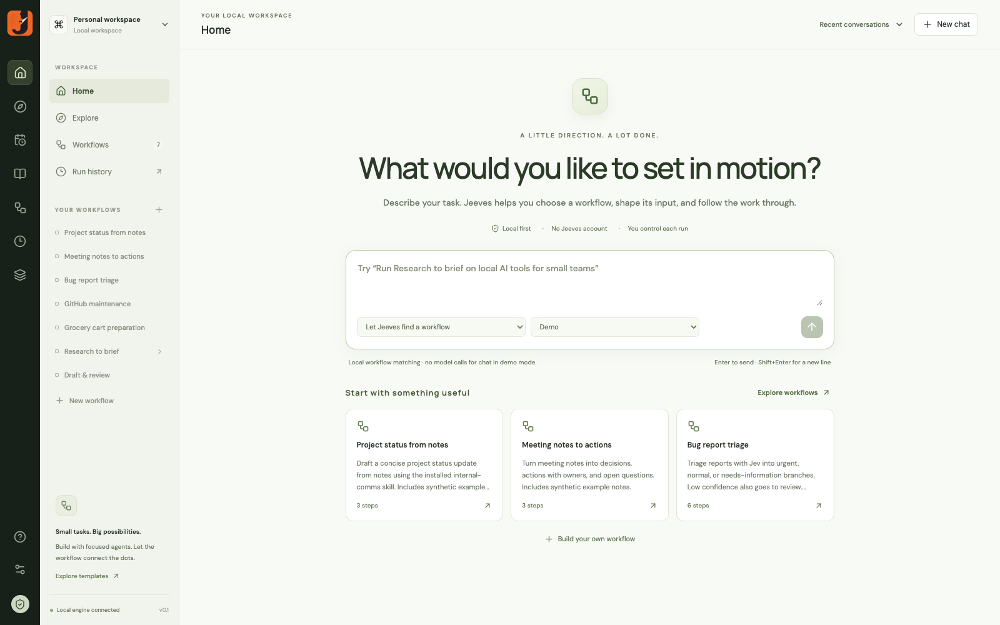

Carry it forward.
Pass the task and connected outputs to the next step.
Local-first workflows for your AI agents
Focused agents. Visible decisions.
Workflows worth keeping.
Research. Judge. Draft. Review. Repeat.
Put the handoffs and decisions into a workflow.
Pass the task and connected outputs to the next step.
Give each agent a narrow task and the skills it needs.
Run it again, schedule it, or take it to another harness.
Try a labeled weekly-update example. Add your own notes. Connect AI when you’re ready.
No Jeeves account. Demo mode uses simulated model responses.

A widespread checkout failure goes to the urgent specialist.
A minor, nonblocking defect goes to the normal specialist.
An underspecified report goes to a clarification specialist.
Three synthetic cases tested live with Jev and Codex. Explicit missing-information routes and confidence thresholds serve different purposes. These examples are not an accuracy benchmark.
Connect agents, decisions, actions, and handoffs. Inspect the trace when a run finishes.
Skills can be assigned to individual agents or inherited from the workflow.

Export it as a skill with a bundled runner, requirements, and resources.
Needs a compatible harness, Node.js 22.12+, and the workflow’s credentials and tools. The desktop app can be closed.
Workflows, conversations, and run history live locally.
Use supported cloud providers, local model servers, or Codex CLI.
Run recurring workflows while the local engine is running.
Live cloud providers receive task context. External accounts and credentials may be required. “Local-first” is a storage and execution design, not a promise that all processing is offline.
A maintainer brief. A meeting follow-up.
A project update. Make the process visible.
Current verified build: macOS Apple Silicon.
Public access has not been announced.
Discussion: Which steps repeat? Where do you need a judgment?
What should the workflow hand back for review?